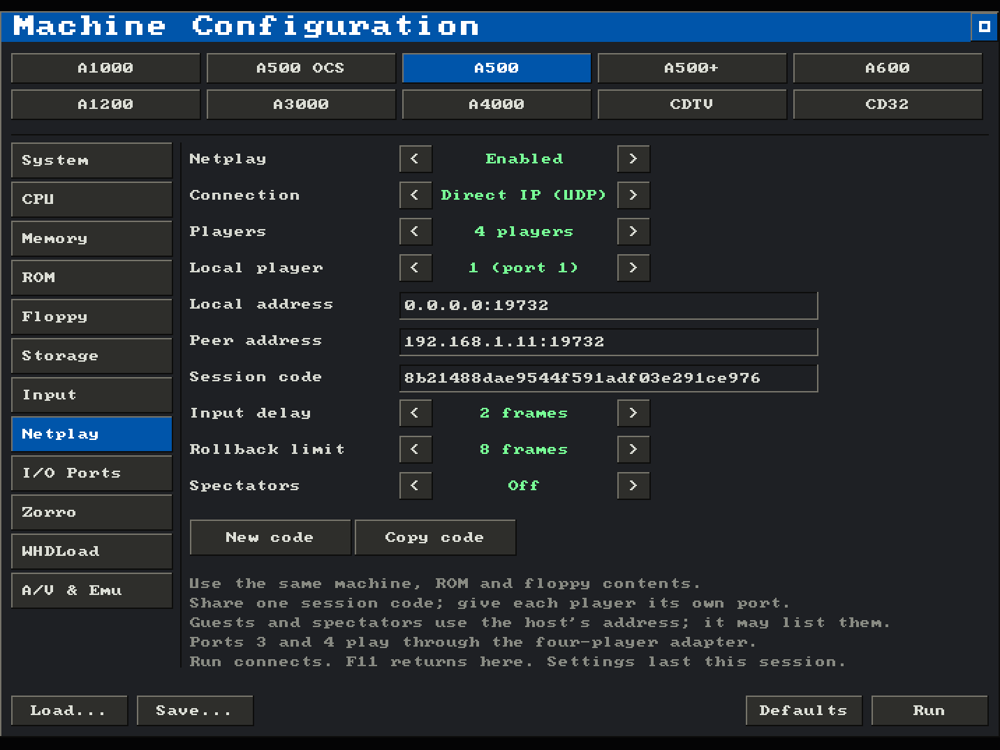
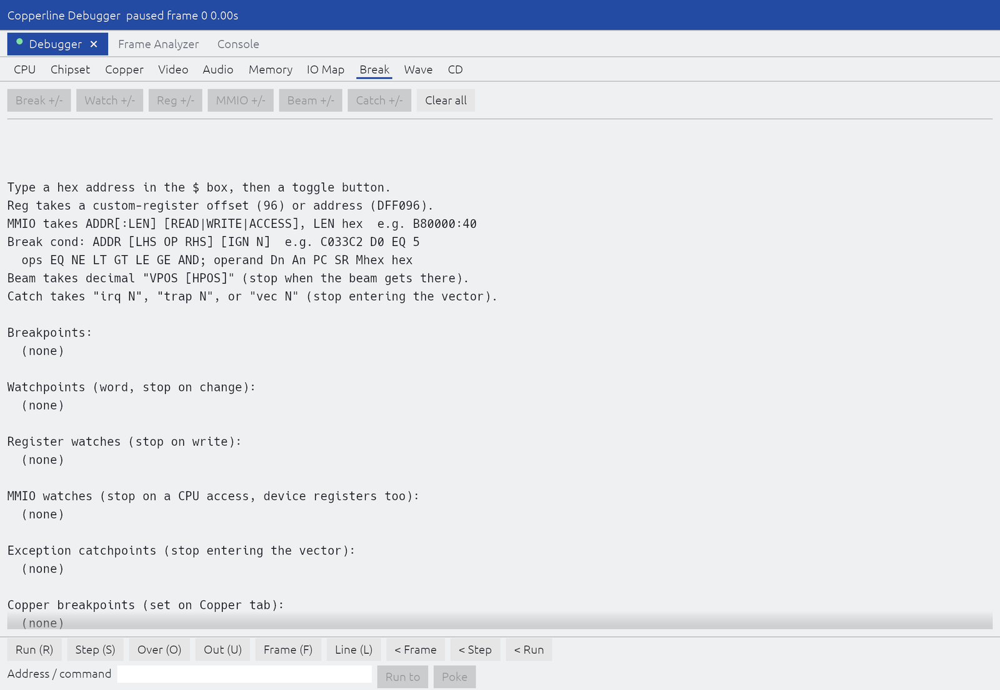

Copperline 1.0.0-rc.1: the first release candidate for 1.0
This is the first release candidate for Copperline 1.0. If testing does not turn up problems that need a second candidate, the next release will be 1.0.0.
That makes this the release to try with your usual games, demos and configurations. If something worked in 0.21.0 and does not work here, please open an issue with the configuration and the software involved.
The candidate also brings three- and four-player netplay on the desktop, debugger watches on device registers with a timed trace of CD32 drive commands, a refreshed AROS ROM, and a manual that has been checked against the program.
Three and four players over netplay
Desktop netplay now seats two to four players. Players three and four use the four-player adapter on the parallel port, as they would at a single Amiga: two switch joysticks, with no mouse and no CD32 buttons.
Player 1 hosts, and everyone else connects to the host, which passes each player's input on to the others. Only the host needs to be reachable, and every player must be connected before the game starts. It works over direct IP and over the encrypted Internet connection, and spectators can still watch.

In the launcher, the host sets Players. On the command line, the host passes --netplay-players 3 or 4, and can repeat --netplay-peer once per guest or leave it out to admit anyone with the session code. The host's machine needs the adapter fitted with a joystick in each socket in use.
Browser games stay two-player, because a web page has no parallel port. See the netplay guide.
Watch device registers and trace the CD32 drive
Ordinary watchpoints compare memory before and after each instruction. That cannot work for a device register, because reading one has side effects: it can pop a byte from Akiko's command port or clear a CIA interrupt flag. MMIO watches are taken at the CPU's own bus access instead. Each data access to the watched range is recorded with its address, size, value, direction, PC, frame, beam position and colour clock. They work on Akiko, the CIAs, Gayle, Zorro boards, custom registers and RAM.
The new CD command trace records every packet the CD32 sends its drive: the decoded command, sector range, speed, reply and outcome, with emulated timestamps for each step from issue to completion. It only observes; it never feeds back into the emulation.

Both are available from the debugger window, the console (MWATCH and CDTRACE), headless runs (COPPERLINE_DBG_MMIO and COPPERLINE_DBG_CD) and the control protocol, and therefore MCP. See the debugger window guide.
AROS ROM refresh
The bundled AROS ROM is rebuilt from upstream master with no local patches; everything the previous refresh carried has now been merged upstream. Hires screens are no longer sheared sideways, a program that enables interrupts itself under Disable() no longer freezes at the first vertical blank, and loaded programs now come from the top of free memory, leaving the low block contiguous for older software. There are also fixes to CD32 cd.device, screen Copper lists, the Shell and the console.
The new memory placement exposed two Copperline bugs, both now fixed: guest code coverage could count the next command as part of the program, and the VS Code profiler sometimes captured no frames.
A manual checked against the program
Every chapter of the manual, all 238 custom-register pages and the example configuration were checked against the source. Wrong defaults, labels and paths are corrected, and flags, configuration keys, protocol methods, console commands and environment variables that had never been documented now are. The Linux instructions now say plainly that Copperline is not on Flathub: download the AppImage, or build the Flatpak yourself.
The review also found places where the program was wrong. The debugger decoded ADKCON bit names one bit too high, showed KILLEHB on ZDCTEN's bit, and hid bit 1 of DDFSTRT and DDFSTOP, which it now shows according to the fitted Agnus. --help, the shortcuts panel and the MCP tool descriptions now match what the program does.
Before upgrading
- Every netplay peer needs 1.0.0-rc.1. The protocol changed to carry four players, so a 0.21.0 peer cannot join.
- Recreate RetroArch save states after updating the core. Desktop save states from 0.20.0 and 0.21.0 still load; states from 0.19 and earlier do not.
- High-density floppy images are refused. Copperline's drives are double-density units. A high-density UAE extended ADF used to crash the guest; it is now refused when inserted, with a message saying why. The RetroArch core accepts only 880 KiB ADFs.
- Some command-line combinations are now errors rather than being ignored, such as
--exit-on-returnwith--gdb. A lone--run PROG --exit-on-returnnow runs without a window.
Thanks to the patrons who pay for the hardware used to check the emulation, to everyone who has reported problems and tested fixes, and to everyone who has contributed code on the way to 1.0.
Download Copperline 1.0.0-rc.1 Try in your browser
Downloads cover macOS, Linux x86-64, Windows x64/ARM64 and three RetroArch platforms. Homebrew users can run brew update followed by brew upgrade copperline. The release includes a PDF manual and checksums. Read the full release notes or changelog.